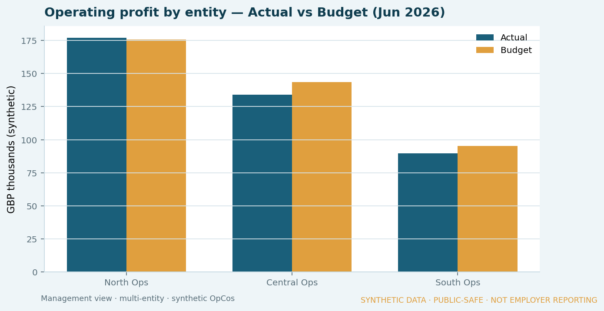
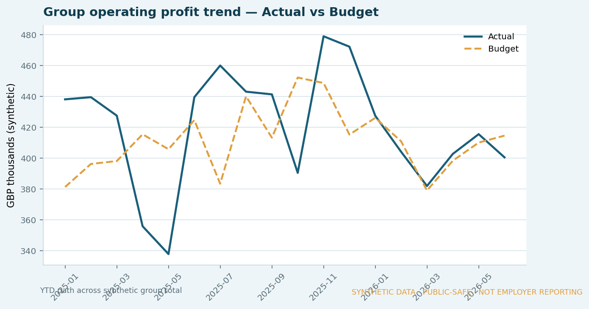
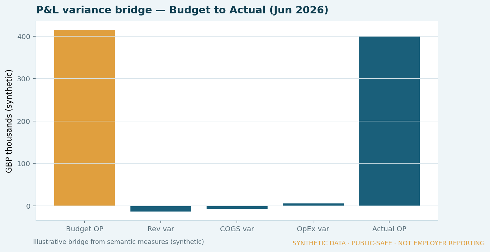
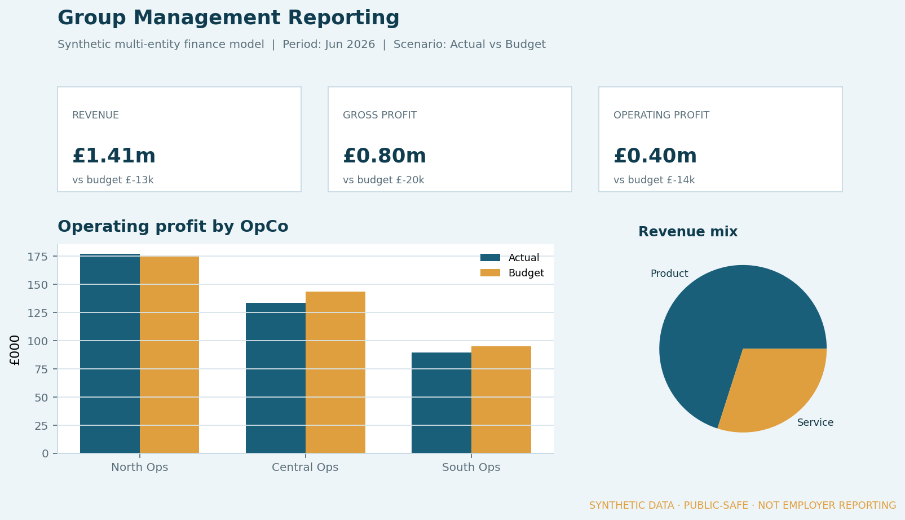

Synthetic demo · Evidence published
Synthetic multi-entity finance analytics
A public-safe reference for group-style management reporting: synthetic operating-company data → dimensional model → finance semantic model → management views for P&L, variance and period comparisons.

Business context
Multi-entity environments often need comparable management reporting across operating companies — actual vs budget, forecast, MTD/YTD and like-for-like views — without every team maintaining its own spreadsheet logic.
The problem
Fragmented spreadsheet reporting makes definitions drift, reconciliation harder, and executive views slower to trust when entities, currencies and periods differ.
My role
Designing and building a synthetic end-to-end reference that mirrors those patterns so the modelling, DAX logic and controls can be shown publicly.
Approach
- Define a small set of synthetic OpCos and a shared account / period / scenario structure.
- Build a dimensional model suitable for management reporting.
- Encode P&L, variance and period logic against that model.
- Publish labelled management-style stills (native Power BI
.pbixoptional). - Document controls: definitions, lineage and synthetic disclosure.
Architecture / model
See the flow above. Optional Fabric path lives under Data Platforms — not required for this demo.
Business logic (in the stills)
- P&L structure by entity and account
- Actual vs budget (and forecast in the dataset)
- Group operating-profit trend across periods
- Variance bridge from budget operating profit to actual
- Entity hierarchy for group vs OpCo views
Controls
- Shared synthetic metric definitions (Revenue, COGS, OpEx, operating profit)
- Single currency (GBP) and labelled scenarios (Actual / Budget / Forecast)
- Clear lineage: CSVs → measures → labelled stills
- Every visual watermarked as synthetic / public-safe
Result
Published evidence from the synthetic model — management-style report stills (not employer dashboards). Native Power BI .pbix remains optional.





Source tables (CSV):
What I am learning
How to make finance reporting logic explicit and reviewable — so a semantic model is not just a dashboard, but a controlled analytical product.
Public-disclosure note
This case uses synthetic companies and figures only. It does not represent discoverIE data, systems or internal architecture.